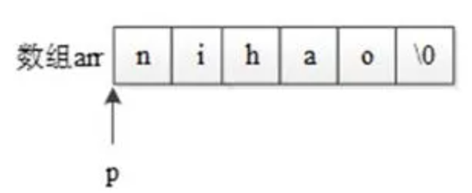

<!DOCTYPE lake>
<h1 data-lake-id="QTPtM" id="QTPtM"><span class="lake-fontsize-12" data-lake-id="ufc8e79f0" id="ufc8e79f0">字符数组与字符串区别</span></h1><ul list="u73e863e3"><li data-lake-id="u11041511" fid="u3242cfee" id="u11041511"><span data-lake-id="uf8469067" id="uf8469067">C语言中没有字符串这种数据类型，可以通过char的数组来替代</span></li><li data-lake-id="u27cd9f0b" fid="u3242cfee" id="u27cd9f0b"><span data-lake-id="u2cecfcf4" id="u2cecfcf4">数字0(和字符 '\0' 等价)结尾的char数组就是一个字符串，字符串是一种特殊的char的数组</span></li></ul><p data-lake-id="ue7f9bf54" id="ue7f9bf54" style="text-indent: 2em"></p><ul list="u73e863e3" start="3"><li data-lake-id="u833556fb" fid="u3242cfee" id="u833556fb"><span data-lake-id="ub834aa13" id="ub834aa13">如果char数组没有以数字0结尾，那么就不是一个字符串，只是普通字符数组</span></li></ul><p data-lake-id="u231f3f70" id="u231f3f70"><span data-lake-id="ufd86ce61" id="ufd86ce61">​</span><br/></p><span class="yuque-card-unsupported">[codeblock]</span><p data-lake-id="ud4ea4403" id="ud4ea4403"><br/></p><h1 data-lake-id="AngZp" id="AngZp"><span class="lake-fontsize-12" data-lake-id="u927f0331" id="u927f0331">字符串的输入输出</span></h1><ul list="u4600cb57"><li data-lake-id="u920518e2" fid="u341dae32" id="u920518e2"><span class="lake-fontsize-12" data-lake-id="u197f37d5" id="u197f37d5">由于字符串采用了'\0'标志，字符串的输入输出将变得简单方便</span></li></ul><span class="yuque-card-unsupported">[codeblock]</span><p data-lake-id="u7c40af29" id="u7c40af29"><br/></p><h1 data-lake-id="EzegD" id="EzegD"><span data-lake-id="u67212e0f" id="u67212e0f">字符指针</span></h1><ul list="ua96608d9"><li data-lake-id="ub9abb2a5" fid="u3964c3dd" id="ub9abb2a5"><span data-lake-id="ufb00f47f" id="ufb00f47f">字符指针可直接赋值为字符串，保存的实际上是字符串的首地址</span></li></ul><ul data-lake-indent="1" list="ua96608d9"><li data-lake-id="u0a1b47ba" fid="u3964c3dd" id="u0a1b47ba"><span data-lake-id="u2e4e1424" id="u2e4e1424">这时候，字符串指针所指向的内存不能修改，指针变量本身可以修改</span></li></ul><span class="yuque-card-unsupported">[codeblock]</span><p data-lake-id="u72de7da4" id="u72de7da4"><br/></p><h1 data-lake-id="qr0tR" id="qr0tR"><span class="lake-fontsize-12" data-lake-id="u4ecad30f" id="u4ecad30f">字符串常用库函数</span></h1><h2 data-lake-id="mmT45" id="mmT45"><span data-lake-id="u31944e3e" id="u31944e3e">strlen</span></h2><p data-lake-id="ub8bdfc9c" id="ub8bdfc9c"><span class="lake-fontsize-12" data-lake-id="u61969ad3" id="u61969ad3">函数说明：</span></p><span class="yuque-card-unsupported">[codeblock]</span><p data-lake-id="u1aefa83c" id="u1aefa83c"><span class="lake-fontsize-12" data-lake-id="u75556210" id="u75556210">示例代码：</span></p><span class="yuque-card-unsupported">[codeblock]</span><p data-lake-id="u0d30d481" id="u0d30d481"><span class="lake-fontsize-12" data-lake-id="u036ca79c" id="u036ca79c">运行结果：</span></p><span class="yuque-card-unsupported">[codeblock]</span><h2 data-lake-id="tSBfZ" id="tSBfZ"><span data-lake-id="u72fcbff7" id="u72fcbff7">strcpy</span></h2><p data-lake-id="ubb70539e" id="ubb70539e"><span class="lake-fontsize-12" data-lake-id="u14e50964" id="u14e50964">函数说明：</span></p><span class="yuque-card-unsupported">[codeblock]</span><p data-lake-id="u594cf73b" id="u594cf73b"><span class="lake-fontsize-12" data-lake-id="u1e1baa04" id="u1e1baa04">示例代码：</span></p><span class="yuque-card-unsupported">[codeblock]</span><p data-lake-id="u0283c2c5" id="u0283c2c5"><span class="lake-fontsize-12" data-lake-id="u969e2701" id="u969e2701">运行结果：</span></p><span class="yuque-card-unsupported">[codeblock]</span><h2 data-lake-id="hlAf6" id="hlAf6"><span class="lake-fontsize-12" data-lake-id="u26a42f48" id="u26a42f48">strcat</span></h2><p data-lake-id="uc1cf4d27" id="uc1cf4d27"><span class="lake-fontsize-12" data-lake-id="u57647609" id="u57647609">函数说明：</span></p><span class="yuque-card-unsupported">[codeblock]</span><p data-lake-id="u3644c57a" id="u3644c57a"><span class="lake-fontsize-12" data-lake-id="ufc7e56f4" id="ufc7e56f4">示例代码：</span></p><span class="yuque-card-unsupported">[codeblock]</span><p data-lake-id="u5e524e62" id="u5e524e62"><span class="lake-fontsize-12" data-lake-id="u7de05cde" id="u7de05cde">运行结果：</span></p><span class="yuque-card-unsupported">[codeblock]</span><h2 data-lake-id="t9HZp" id="t9HZp"><span class="lake-fontsize-14" data-lake-id="u19a16c2d" id="u19a16c2d">strcmp</span></h2><p data-lake-id="u842bab8f" id="u842bab8f"><span class="lake-fontsize-12" data-lake-id="u5cd93195" id="u5cd93195">函数说明：</span></p><span class="yuque-card-unsupported">[codeblock]</span><p data-lake-id="u21ad8859" id="u21ad8859"><span class="lake-fontsize-12" data-lake-id="u933a3a55" id="u933a3a55">示例代码：</span></p><span class="yuque-card-unsupported">[codeblock]</span><p data-lake-id="ucec9b4eb" id="ucec9b4eb"><span class="lake-fontsize-12" data-lake-id="u5fd2a540" id="u5fd2a540">运行结果：</span></p><span class="yuque-card-unsupported">[codeblock]</span><h1 data-lake-id="Yic7S" id="Yic7S"><span data-lake-id="u5989f1ec" id="u5989f1ec">字符串案例</span></h1><p data-lake-id="u3684fbcd" id="u3684fbcd"><span class="lake-fontsize-12" data-lake-id="ub20307f8" id="ub20307f8">需求：自定义一个函数my_strlen()，实现的功能和strlen一样</span></p><span class="yuque-card-unsupported">[codeblock]</span>